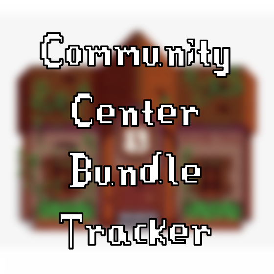

Community Center Bundle Tracker 
This is a tool made by avocado5182 on Github to make completing the Community Center in the game Stardew Valley easier. With this site, you can:
- Check off bundles/items within them as you complete them
- Plan out each day on a calendar
- Get tips/tricks for general playing and the community center
Community Center Bundle Tracker is open source and available on Github.